一、七个习惯简要定义
习惯一：积极主动（BE PROACTIVE）
积极主动即采取主动，为自己过去、现在及未来的行为负责，并依据原则及价值观，而非情绪或外在环境来下决定。积极主动的人是改变的催生者，他们摒弃被动的受害者角色，不怨天尤人，发挥了人类四项独特的禀赋—— 自我意识 、良知 、 想象力 和 独立意志 ，同时以由内而外的方式来创造改变，积极面对一切。他们选择创造自己的人生，这也是每个人最基本的决定。
习惯二：以终为始（BEGIN WITH THE END IN MIND）
所有事物都经过 两次的创造 —— 先是在脑海里酝酿 ， 其次才是实质的创造 。个人、家庭、团队和组织在做任何计划时，均先拟出 愿景 和 目标 ，并据此塑造未来，全心投入自己最重视的原则、价值观、关系及目标。对个人、家庭或组织而言，使命宣言 可以说是愿景的最高形式，它是根本的决策，主宰了所有其他决定。领导工作的核心，就是基于共有的使命、愿景和价值观，创造出一个文化。
习惯三：要事第一（PUT FIRST THINGS FIRST）
要事第一即实质的创造，是梦想（你的目标、愿景、价值观及要事处理顺序）的组织与实践。次要的事不必摆在第一，要事也不能放在第二。无论迫切性如何，个人与组织均要更多聚焦要事，重点是，把要事放在第一位。（重要但不紧急的事情）
习惯四：双赢思维（THINK WIN-WIN）
双赢思维是一种基于互敬、寻求互惠的思考框架与心意，目的是分享更多的机会、财富及资源，而非敌对式竞争。双赢既非损人利己（赢输），亦非损己利人（输赢）。我们的工作伙伴及家庭成员要从互赖式的角度来思考（“我们”，而非“我”）。双赢思维鼓励我们解决问题，并协助个人找到互惠的解决办法，是一种资讯、力量、认可及报酬的分享。
习惯五：知彼解己（SEEK FIRST TO UNDERSTAND,THEN TO BE UNDERSTOOD）
当我们不再急切回答，改以诚心去了解、聆听别人，便能开启真正的沟通，增进彼此关系。对方获得理解后，会觉得受到尊重与认可，进而卸下心理防备，坦然交谈，双方对彼此的了解也就更顺畅自然。知彼需要仁慈心，解己需要勇气，能平衡两者，则可大幅提升沟通的效率。
习惯六：统合综效（SYNERGIZE）
统合综效谈的是 创造第三种选择 ，即非按照我的方式，亦非遵循你的方式，而是创造第三种更好的办法。它是互相尊重的成果——不但了解了彼此，甚至还称赞彼此的差异，欣赏对方解决问题及把握机会的手法。个人的力量是团队和家庭统合综效的基础，能使整体获得一加一大于二的成效。实践统合综效的人际关系和团队会扬弃敌对的态度（1+1＝0.5），不以妥协为目标（1+1＝1.5），也不仅仅止于合作（1+1＝2），他们要的是创造式的合作（1＋1＞2）。
习惯七：不断更新（SHARPEN THE SAW）
“不断更新”谈的是，如何在四个生活基本面（身体 、精神 、智力 、社会/情感 ）中，不断更新自己。这个习惯提升了其他六个习惯的实施效率。对组织而言，习惯七提供了愿景、更新及不断的改善，使组织不至呈现老化及疲态，并迈向新的成长之路。对家庭而言，习惯七通过固定的个人及家庭活动，使家庭效能升级，就像建立传统，使家庭日新月异，即是一例。
二、思维方式与原则
由内而外全面造就自己
品德成功论提醒人们，高效能的生活是有基本原则的。只有当人们学会并遵循这些原则，把他们融入到自己的品格中去，才能享受真正的成功与恒久的幸福。
相关理论
- 期望理论（Expectancy Theory）
- 自我实现预言（Self-fulfilling Prophecy）
- 皮格马利翁效应（Pygmalion Effect）
结论
要改变现状，首先要改变自己；要改变自己，先要改变我们对问题的看法。
品德与个人魅力孰重
- 从这200年来的作品中，我注意到一个令人诧异的趋势。前150年的论著强调“品德（CharacterEthic）”为成功之本——如诚信、谦虚、忠诚、节欲、勇气、公正、耐心、勤勉、朴素和一些称得上是金科玉律的品德。
- 然而第一次世界大战后不久，人们对成功的基本观念改变了。由重视“品德”转而强调“个人魅力（Personality Ethic）”，即认为成功与否更多取决于性格、社会形象、行为态度、人际关系以及长袖善舞的圆熟技巧。这种思潮朝两大方向发展：一是注重人际关系与公关技巧；二是鼓吹盲目积极乐观（PMA）。
- 潜意识里都受到这种速成观念的影响，在看待与处理这个问题时，我们偏重许多其他因素，反而忽略了主要目标。
- 自动自发因素的作用要多于外在影响，努力探寻你自己的心灵吧，因为生活源自于此。
光有技巧还不够
- 我们的本质要比言行更具说服力，这个道理人人都懂。有些人是我们绝对信任的，因为我们了解他们的品德，不论他们是否能说会道、擅长交际，我们就是信任他们，而且能够与之合作顺畅。
- 威廉姆·乔治·乔登（William George Jordan）曾说：人性可善可恶，冥冥中影响着我们的一生，而且总是如实反映出真正的自我，那是伪装不来的。
思维方式的力量
- 品德成功论与个人魅力论就是两种典型的社会思维方式。
- “Paradigm （思维方式）”这个词来自希腊文，最初是一个科学名词，现在多用来指某种理论、模型、认知、假说或参考框架。但广义上是指我们“看”世界的方法，这种“看”和视觉无关，主要指我们的感知、理解与诠释。它是每个人看待世界的方式，未必与现实相符。它是一份地图，而非地域本身，是由每个人的成长背景、经验及选择打造而成，我们会透过它来窥探万事万物。
- 我们可以把思维方式比作地图。我们都知道地图不代表地域，只是对地域的某些方面进行说明。思维方式就是这样，它是关于某种事物的理论、诠释或者模型。
- 假设你想去芝加哥中心区的某个地方，地图本应该帮助你到达目的地，但是由于印刷问题，你得到了一张标注为芝加哥，实际上却是底特律的地图。你能想象无法到达目的地的那种沮丧和无助吗？
- 我们每个人脑中都有很多地图，可以分成两大类：
- 一类是依据世界本来面目绘制的地图，反映现实情况；
- 另一类是依据思维方式绘制的地图，反映个人价值观。我们用这些地图诠释所有的经验，从来都不怀疑地图的正确性，甚至意识不到它们的存在。我们理所当然地假定自己的所见所闻就是真实的世界。
- 我们的态度与行为源自这种假定，对事物的看法决定着我们的思想与行为。
- 家庭、学校、教堂、单位、朋友、同事以及流行思潮（如个人魅力论等），都在不知不觉中影响着我们，左右着我们的思维方式——我们的地图。
- 个人魅力论的一个基本缺陷，即仅仅改变表面上的行为与态度，却忽略作为源头的思维方式，那么改变的成效一定有限。
- “立场决定观点。”
- 我们越是认识到思维方式以及经验在我们身上的影响力，就越是能够对自己的思维方式负责，懂得审视它，在现实中检验它，并乐于聆听和接受别人的看法，从而获得更广阔的视野和更客观的看法。
思维转换的力量
- 思维转换，即某人从另一角度看问题的顿悟感。第一印象的影响越深，顿悟的力量就越大，好比一瞬间万道光芒把内心照亮。
- “思维转换（Paradigm Shift）”一词由托马斯·库恩（Thomas Kuhn）在他的经典之作《科学革命的结构》（The Structure of Scientific Revolutions）一书中最先提出。库恩在书中阐释，科学研究的每一项重大突破，几乎都是首先打破传统，打破旧思维、旧模式才得以成功。
- 古埃及天文学家托勒密认为地球是宇宙的中心，但哥白尼主张太阳才是宇宙的中心，因而激起思维转换。尽管后者曾招致强烈反对与迫害，但转眼间，人类对宇宙万物的诠释完全改观。
- 牛顿的物理学原理虽至今仍是现代工程学的基础，但是仍然不够完整。直到爱因斯坦相对论的提出，又为科学界带来一次革命，增添了前沿价值以及相关注解。
- 有关细菌的学说出现之前，许多母亲和孩子在分娩过程中死亡，对此没有人能解释清楚。军事战争中，许多士兵死于轻伤或是疾病，而非前线的致命攻击。直到细菌论的发展，带来了全新的思维方式，有助于更好、更全面地理解当时的情况，现代医学才发生了重大变革。
- 美国的今天也是思维转换的成果。君权神授、君主专制思想延续了几个世纪，直到建立一个民有、民治、民享的政府这一思想的出现，才打破传统思维。民主宪政由此孕育而生，释放了人类的天赋和才能，创立了生存、自由、自由人权的新规范，在世界上产生了历史上前所未有的影响力和希望。但并非所有的思维转换都是积极的。例如我们前面提到的，人们由强调品德转为强调个人魅力，这种转换反而让我们偏离了通向成功与幸福的轨道。
- 不论思维转换的结果是否积极，过程是否渐进，都会让我们的世界观发生改变，而且改变的力度惊人。不论思维方式是否正确，都会决定我们的行为和态度，并最终影响到我们的人际关系。
- 如果我们只想让生活发生相对较小的变化，那么专注于自己的态度和行为即可，但是实质性的生活变化还是要靠思维的转换。
- 梭罗（Thoreau）曾经说过：“一棵邪恶的大树，砍它枝叶千斧，不如砍它根基一斧。”行为和态度就是枝叶，思维方式就是根基，抓住根本才能让生活出现实质性的进展。
身体力行
- 思维方式和性格息息相关。从人类这个角度而言，你的观念会从为人中体现出来。我们对待事物的方式和性格紧密相关。如果不把性格和视角上的改变结合起来，是难有成效的。
- 思维方式之所以强大，是因为这构成了我们观察世界的窗口。而思维转换的力量也正是定式改变必需的力量，无论这种转变是立即发生的，还是经过计划缓慢进行的。
以原则为中心的思维方式
- 品德成功论 植根于一个基本信念之上，那就是人类效能都需要原则作指引，这是放之四海皆准的真理，和物理学中的万有引力法则一样，都是毋庸置疑、不容忽视的自然法则。
- 塞西尔·B. 德米尔（Cecil B. deMille）在他执导的电影《十诫》（The Ten Commandments）中所揭示的：“我们不可能打破法则，只能在违背法则的时候让自己头破血流。”
- 原则：
- 有人根据自己的经历建立思维方式或者绘制地图，然后借此观察自己的生活与人际关系。但是地图不等于地域本身，它只是一种“主观的事实”，是对某一地域的描述。
- 只有“灯塔”式指引人类成长和幸福的原则才是“客观的事实”，是地域本身。这一法则已经渗透到历史上所有的文明社会中，并成为家庭和机构繁荣持久的基础。
- 任何人只要对人类历史的盛衰兴替有深切了解，都会承认这些原则是颠扑不破、历久弥新的。国家社会的存亡与兴衰，往往就取决于是否能遵奉这些原则。
- 原则不同于实践。实践是特定的行为或活动，在某一情况下适用的实践未必能在另一种情况下适用。就好比父母不能将教育第一个孩子的方法照搬到第二个孩子身上。
- 实践是个别的、具体的，而原则是深刻的、基本的和普遍的。原则适用于任何个人、婚姻、家庭以及公私机构。如果我们把原则内化为习惯，就能够用不同的实践方法应对任何局面。
- 原则不是价值观。一群盗匪可以有相同的价值观，但却违背了良善的原则。如果说原则是地域，那么价值观就是地图。唯有尊重正确原则，才能认清真相。
- 原则是人类行为的指南针，历经考验，长盛不衰，不证自明。要抓住它们的本质，最简捷的方法就是设想一下反其道而行之的后果，不会有人以为可以靠欺骗、不公、卑鄙、无能、平庸或者堕落来换得持久的幸福与成功。
- 一个人的思维方式越符合这些原则或者自然法则，就越能正确而高效地生活。比起为改变态度和行为所做出的努力，正确的思维方式对于个人和人际关系效能的影响要大得多。
成长和改变的原则
- 个人魅力论之所以让大家趋之若鹜，就是因为它号称能够让人们跨过事物成长的自然过程，迅速而轻松地实现个人效能和人际关系成果丰硕的圆满人生。这种华而不实、“暴发户” 式的论调，无异于鼓励不劳而获，即便获得了所谓的成功，也不过是昙花一现。个人魅力论给人一种错觉和幻象，妄图一步登天，这就好比目的地是芝加哥，手上拿的却是底特律的地图。
- 埃里希·费洛姆（Erich Fromm）对于个人魅力论的根源和所谓成就有很深的见解。他说：现在我们会遇到这样一种人，他们不了解也不理解自己，他们只知道别人眼中的自己应该是什么样子。他们不再健谈，取而代之的是闲聊；他们不再开怀大笑，取而代之的是挤出的笑容；他们抛却真切的痛苦，取而代之的是无聊的绝望。两句话概括：这种缺陷已经导致他们丧失了天性与个性；他们从本质上来说已经和其他人别无二致。
- 我们通常能够在物质领域理解并接受“循序渐进”的原则，但在精神领域、人际关系，甚至个人品德方面，却很难做到这一点。即使理解了，也未必愿意接受或实践，结果妄图走捷径，想跳过关键步骤到达目的地的大有人在。
- 自然的成长过程不容违背、忽略或缩短，那只会让你平添失望和挫败感。
- 如果学生不肯发问，不肯暴露自己的无知，不肯让老师知道他的真正水平，那么绝对学不到东西，也就不能有长进。而且伪装实非长久之计，总有被拆穿的一天。承认自己的无知往往是求知的第一步。梭罗曾说：“如果我们时时忙着展现自己的知识，将何从忆起成长所需的无知？”
- 或许只有真正经历过拥有，才会真正懂得分享。许多人在家庭或婚姻中只知机械式地付出，或者拒绝付出和分享，可能正是由于他们从未体验过拥有，而且缺乏自我认同和自尊。所以教育孩子应该要有充分的耐心让他们体会拥有的感觉，同时用足够的智慧告诉他们付出的价值，另外还要以身作则。
症结在于治标不治本
- 这种人最终能找到满足他们需求和教会他们方法的人，短期来看，技巧和诀窍似乎很管用，实际作用却和阿司匹林、创口贴一样，只能缓解一时之痛。然而，痼疾仍然存在，久而久之新的症状又会浮现。人们越是依赖立竿见影的解决方法，越是加剧了问题潜在的隐患。解决问题的方式正是问题所在。
- 现在你知道个人魅力论的思维方式是如何深刻地影响甚至决定我们看待问题和解决问题的方法了吧！不论你是否察觉，总之已经有越来越多的人不再对个人魅力论的空洞承诺抱有幻想。在与全美各类组织合作的过程中，我发现那些高瞻远瞩的主管都对所谓的“励志”故事和演讲避而远之。他们需要的是实质性的东西，需要过程，而不仅仅是“阿司匹林”和“创可贴”，他们希望铲除病根，只关注会带来长期效应的原则。
新的思想水平
爱因斯坦（Albert Einstein）曾说：“重大问题发生时，依我们当时的思想水平往往无法解决。”
- 里里外外地审视自己之后，我们发现那些在个人魅力论影响下产生的问题是如此地侵筋蚀骨，根本不可能再用个人魅力论里那些肤浅的方法解决。我们需要新的、更深层次的思想水平，即基于原则的思维方式，它能正确引导我们实现高效能，改善人际关系，解决深层问题。
- “由内而外”的意思是从自身做起，甚至更彻底一些，从自己的内心做起，包括自己的思维方式、品德操守和动机。
- 由内而外的观点认为个人领域的成功必须先于公众领域的成功；只有先信守对自己的承诺，才能信守对他人的承诺。把个人魅力置于品德之上，妄图在自我完善之前完善人际关系都将徒劳无功。
- 由内而外是一个持续的更新过程，以主宰人类成长和进步的自然法则为基础，是螺旋向上的，它让我们不断进步，直到实现独立自强与有效的互赖。
我们必不可停止探索，而一切探索的尽头，就是重回起点，并对起点有首次般的了解。
——艾略特（T．S．Eliot）
付诸行动
我们的思维方式，无论正确与否，是我们的态度与行为的根本，归根到底，是我们的人际关系的根本。
- 如果我们只想让生活发生相对较小的变化，我们可以把注意力集中于自己的态度和行为。但是，如果我们想让生活发生实质性的变化，我们必须关注自己的思维方式——我们观察自己和周围世界的方式。
七个习惯概论
人的行为总是一再重复。因此卓越不是一时的行为，而是习惯。
——亚里士多德（Aristotle）｜古希腊哲学家、文艺理论家
- 品德实质上是习惯的合成。俗语说：“思想决定行动，行动决定习惯，习惯决定品德，品德决定命运。”习惯对我们的生活有极大的影响，因为它是一贯的，在不知不觉中，经年累月影响着我们的品德，暴露出我们的本性，左右着我们的成败。
- 习惯也一样有极大的引力，只是许多人不加注意或不肯承认罢了。要根除做事拖沓，缺乏耐心，吹毛求疵或自私自利这些根深蒂固的不良习性，仅有一点点毅力，只做一点点改变是不够的。“起飞”需要极大的努力，然而一旦脱离了引力的束缚，就会迎来广阔的自由天地，创造出高效能生活所必需的凝聚力和秩序。
“习惯”的定义
- 习惯定义为“知识”、“技巧”与“意愿”相互交织的结果
- 知识是理论范畴，指点“做什么”及“为何做”；
- 技巧告诉我们“如何做”；
- 意愿促使“想要做”。
- 要养成一种习惯，三者缺一不可。
- 改变习惯是一个痛苦的过程，因为有了更高的目标才能激发改变，面向未来牺牲当下的意愿才能促进改变。但是这又是幸福的源泉，是生活的目标和规划。从这个角度而言，幸福就是我们经过一番努力与牺牲得到的果实。
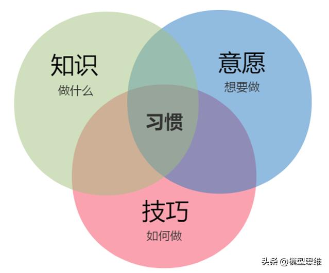
成熟模式图
七个习惯并非零落、分散的心理法则。它们符合成长规律，提供了开发个人和人际效能的渐进、连续和高度整合的方法，让我们依次经历“成熟模式”——由依赖到独立，再到互赖，不断进步。
“成熟模式图”（Maturity Continuum）即人类成长的三个阶段，分别为依赖期、独立期、互赖期。
- 依赖（Dependence）期以“你”为核心
- 你照顾我；
- 你为我的得失成败负责。
- 依赖期的人靠别人来实现愿望；
- 独立（Independence）期以“我”为核心
- 我可以做到；
- 我可以负责；
- 我可以靠自己；
- 我有权选择。
- 独立期的人单枪匹马打天下；
- 互赖（Interdependence）期以“我们”为核心
- 我们可以做到；
- 我们可以合作；
- 我们可以融合彼此的智慧和能力，
- 共创前程。
- 互赖期的人，群策群力实现最高成就。
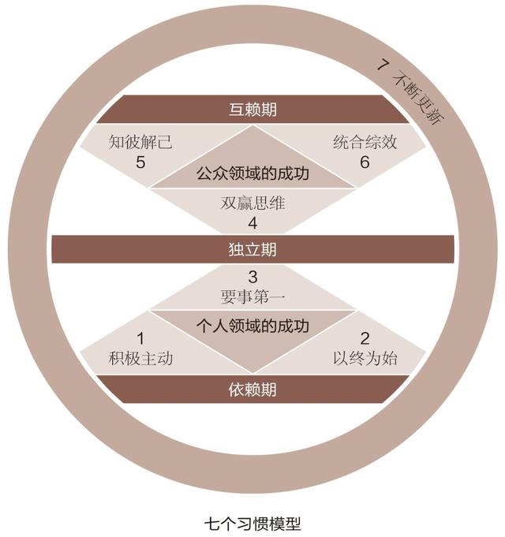
“效能”的定义
本书介绍的七个习惯都能产生高效能，因为它们基于原则，效果持久，是品德的基础，能帮助你更有效地解决问题，把握机会，不断学习并结合其他原则以实现螺旋向上的成长
“产出/产能平衡”（P/ PC Balance）
- 产出
- 产能，生产的资产或能力
三类资产
- 物质资产
- 金融资产
- 人力资产
团体的产能
- 效能在于平衡。一味重视产出会导致糟糕的健康状况、耗损的机器设备、透支的银行存款或破裂的人际关系。而太过维护产能，就如同一个每天长跑三四个小时的人，宣称可以因此多活十年，却不知大好时光都在跑步中流逝。又好像那些只知念书，不肯生产的人，坐享别人的金蛋，自己永远不敢面对现实。
- 唯有在金蛋（产出）与鹅的健康和幸福（产能）之间取得平衡，才能实现真正的效能。虽然你常会因此面临两难选择，但这正是效能原则的精髓所在。它是短期利益与长期目标之间的平衡，是好分数与刻苦努力之间的平衡，是清洁的房间与良好的亲子关系之间的平衡。
三、个人领域的成功:从依赖到独立
习惯一 积极主动——个人愿景的原则
最令人鼓舞的事实，莫过于人类确实能主动努力以提升生命价值。
——亨利·戴维·梭罗（Henry David Thoreau）｜美国文学家及哲学家
- 人性的本质是主动而非被动的，人类不仅能针对特定环境选择回应方式，更能主动创造有利的环境。
- 采取主动不等于胆大妄为、惹是生非或滋事挑衅，而是要让人们充分认识到自己有责任创造条件。
“自我思维”（Self-paradigm）
- 我们可以客观地检讨我们是如何“看待”自己的
- 所有正确有益的观念都必须以这种“自我思维”为基础，它影响我们的行为态度以及如何看待别人，可以说是一张属于个人的人性地图。
- 我们如果不能客观地考虑看待自己的方式，也就不能理解他人感知他们自己和世界的方式。因此我们无意间就会把个人意愿强加在别人身上，内心却还觉得已经很客观了。
- 幸好人类有自我意识，能够检讨自己的自我思维是基于现实和原则，还是受到社会的制约与环境的影响。
“社会之镜”（Social Mirror）
时下盛行的社会观点认为，环境与条件对我们起着决定性的作用。我们不否认条件作用的影响巨大，但并不等于承认它凌驾于一切之上，甚至可以决定我们的命运。
决定论
- 基因决定论（Genetic Determinism）：认为人的本性是祖先遗传下来的。比如一个人的脾气不好，那是因为他先祖的DNA中就有坏脾气的因素，又借着基因被继承下来。
- 心理决定论（Psychic Determinism）：强调一个人的本性是由父母的言行决定的。比如你总是不敢在人前出头，每次犯错都内疚不已，那是与父母的教育方式和你的童年经历分不开的，因为你忘不了自己尚且稚嫩、柔弱和依赖他人时受到的心灵伤害，忘不了小时候因为表现欠佳而遭遇的惩罚、排斥和与人比较的感受。
- 环境决定论（Environmental Determinism）：主张环境决定人的本性。周遭的人与事，例如老板、配偶、叛逆期子女，或者经济状况乃至国家政策，都可能是影响因素。
三种地图都以“刺激—回应”理论为基础
刺激和回应之间选择的自由
人类特有的四种天赋
- 自我意识（self-awareness）
- 想象力（Imagination）
- 良知（Conscience）
- 独立意志（Independent Will）
因为人的这些天赋，可以在相同的刺激下选择不同的回应
“积极主动”的定义
埃莉诺·罗斯福（Eleanor Roosevelt，美国小罗斯福总统的夫人——译者注）曾说：“除非你愿意，否则没人能伤害你。”
圣雄甘地（Gandhi）也曾经说过类似的话：“除非拱手相让，否则没人能剥夺我们的自尊。”
- 积极主动不仅指行事的态度，还意味着人一定要对自己的人生负责。个人行为取决于自身的抉择，而不是外在的环境，人类应该有营造有利的外在环境的积极性和责任感。
- 责任感（Responsible），从构词法来说是能够回应（Response-able）的意思，即选择回应的能力。所有积极主动的人都深谙其道，因此不会把自己的行为归咎于环境、外界条件或他人的影响。他们根据价值观，有意识地选择待人接物的方式，不会因为外界因素或一时情绪而冲动行事。
- 积极主动是人类的天性，即使生活受到了外界条件的制约，那也是因为我们有意或无意地选择了被外界条件控制，这种选择称为消极被动（Reactive）。而积极主动的人则心中自有一片天地，无论天气是阴雨绵绵还是晴空万里，都不会对他们产生影响，只有自己的价值观才是关键因素。如果认定了工作第一，那么即使天气再坏，敬业精神依旧不改。
- 积极主动的人理智胜于冲动，他们能够慎重思考，选定价值观并将其作为自己行为的内在动力；而消极被动的人则截然相反，他们感情用事，易受环境或条件作用的驱使。
人生的三种价值观
- 一是经验价值观（Experiential Value），来自自身经历
- 二是创造价值观（Creative Value），源于个人独创
- 三是态度价值观（Attitudinal Value），即面临绝症等困境时的回应
采取主动
人性的本质是主动的。人类不仅能针对特定环境选择回应方式，更能主动创造有利环境。但这不等于胆大妄为、惹是生非或滋事挑衅，而是要让人们充分认识到自己有责任创造条件。
要求责任感并非贬抑。主动是人的天性，虽然主动性有时处于沉睡状态，但只要经过唤醒就会重新焕发活力。尊重这种天性，至少可提供对方一面镜子，让他们在镜中清晰而又不失真地照出自我。由于个人的成熟度不同，对尚处于情绪依赖阶段的人，不必期望太高。但至少可以创造有利的气氛，逐渐培养他的责任感。
变被动为主动
积极主动与消极被动有天壤之别，尤其再加上聪明才智，差别就更大了。积极主动与消极被动之间的差别可不仅仅是提高20%~50%的效率，如果积极主动的人在智力、意识和敏感度方面技高一筹，那么差别就更大。
积极行动不同于积极思考。我们不但需要面对现实，还要面对未来。但真正的现实是，我们有能力以积极态度应对现状和未来，逃避这一现实，就只能被动地让环境和条件决定一切。
包括企业、家庭和各级社会团体在内的任何组织都可以采取积极的态度，将其与创造力结合起来，在内部营造积极主动的企业文化氛围，不必坐等上苍的恩赐，而是通过集思广益，主动培育团队的共同价值观和目标。
聆听自己的语言
思维意识会决定行为和态度，如果有意识仔细检查，我们会发现这些都会在我们的人格地图上体现出来。比如我们的语言，就是我们是否积极处世的真实写照。
在所有进步的社会中，爱都是代表动作，但消极被动的人却把爱当作一种感觉。好莱坞式的电影就常灌输这种不必为爱负责的观念——因为爱只是感觉，没有感觉，便没有爱。事实上，任由感觉左右行为是不负责任的做法。
- 推卸责任的言语往往会强化宿命论。说者一遍遍被自己洗脑，变得更加自怨自艾，怪罪别人和环境，甚至把星座也扯了进去。
关注圈与影响圈
- 看一个人的时间和精力集中于哪些事物，也能大致判断他是否积极主动。每个人都有格外关注的问题，比如健康、子女、事业、工作、国债或核战争等等，这些都可以被归入“关注圈”（Circle ofConcern），以区别于自己没有兴趣或不愿理会的事物。
- 关注圈内的事物，有些可以被掌控，有些则超出个人能力范围，前者可以被圈成一个较小的“影响圈”（Circle of Influence）。观察一个人的时间和精力集中于哪个圈，就可以判断他是否积极主动。
- 积极主动的人专注于“影响圈”，他们专心做自己力所能及的事，他们的能量是积极的，能够使影响圈不断扩大。
- 反之，消极被动的人则全神贯注于“关注圈”，紧盯他人弱点、环境问题以及超出个人能力范围的事不放，结果越来越怨天尤人，一味把自己当作受害者，并不断为自己的消极行为寻找借口。错误的焦点产生了消极能量，再加上对力所能及之事的忽略，就造成了影响圈日益缩小。
直接控制、间接控制和无法控制
- 可直接控制的（问题与自身的行为有关）
- 可以通过培养正确习惯来解决，这显然在影响圈范围内，本书第二部分“个人领域的成功”中讨论到的习惯一、二、三即属于这一类
- 可间接控制的（问题与他人的行为有关）
- 可以通过改进施加影响的方法来解决，例如采取移情方式而不是针锋相对，以身作则而不是口头游说。这在第三部分“公众领域的成功”的习惯四、五、六中有所论述
- 无法控制的（我们无能为力的问题，例如我们的过去或现实的环境）
- 我们要做的就是改变面部曲线，以微笑、真诚与平和来接受现实。纵使有再多不满，也要学着泰然处之，这样才不至于被问题左右。
不论是能直接控制的、间接控制的还是无法控制的问题，解决的第一步都掌握在我们自己手里。我们可以改变习惯、手段和看法，而这些都属于影响圈范围。
扩大影响圈
有人误以为“积极主动”就是胆大妄为、滋事挑衅或目中无人，其实不然，积极处世者只是更为机敏，更重视价值观，能够切乎实际，并掌握问题的症结所在。
“如果”和“我可以”
- 把外在环境视作问题症结的想法本身就成问题，应该说是我们给了外部环境控制自己的权力，这种“由外而内”求变的思维方式就是以外在环境改变作为个人改变的先决条件。
- 真正有效的策略是从自身能控制的方面着手，也就是先改进自己的缺失。
- 如果遇上实在无能为力的状况，保持乐观进取的心态仍是上上策，不管快乐或不快乐，同样积极主动。有些事物不是人力所能控制，比方说天气，但我们仍可保持内心的愉悦或外在环境的愉悦气氛。对力所不能及之事处之泰然，对能够改变的则全力以赴。
硬币的另一面——应对错误的选择
在把生活中心由关注圈移至影响圈之前，有两件关注圈内的事值得深思，那就是自由选择的 后果 及 错误 。
- 原则制约我们的行为，顺之则产生积极效果，逆之则导致消极后果。所以说我们在享有选择的自由的同时，也必须承担随之而来的后果
- 对于已经无法挽回的错误，积极主动的人不是悔恨不已，而是承认往日错误已属关注圈的事实，那是人力无法企及的范畴，既不能从头来过，也不能改变必然后果
- 对待错误的积极态度应是马上承认，改正并从中吸取教训，这样才能真正反败为胜。正如俗语说“失败是成功之母。”
- 如果犯了错却不肯承认和改正，也不从中吸取教训，等于错上加错，自欺欺人。文过饰非、强词夺理无异于一错再错，结果是越描越黑，给自己带来更深的伤害。
- 我们对任何错误的回应都会影响到人生的下一刻，所以一定要立刻承认并加以改正，避免殃及未来，这样我们也会重获力量。
做出承诺，信守诺言
- 影响圈的核心就是做出承诺与信守诺言的能力。积极主动的本质和最清晰的表现就是对自己或别人有所承诺，然后从不食言。
- 承诺也是成长的精髓。自我意识与良知的天赋让我们能够自我检讨，发现有待改进的地方、有待发挥的潜能以及有待克服的缺点，然后想象力与独立意志的天赋会配合自我意识，帮我们做出承诺，确立目标，矢志达成。
两种能够直接掌控人生的途径：
- 一是做出承诺，并信守诺言
- 二是确立目标，并付诸实践
知识、技巧和意愿都位于影响圈内，改善其中任何一项都会改善三者之间的平衡，三者的交集越大，就说明我们对于习惯及其原则的修养越完善，就越能够以崇高的品德实现平衡而高效能的生活。
积极主动：为期30天的试验
- 花一整天，听听你自己和周围人的语言，你使用“但愿”、“我办不到”、“我不得不”等消极回答的频率有多高？
- 根据以往的经历，想象一下将来遇到什么会让你变得消极。假如你关注的是影响圈，再考虑一下这个场景，你能怎样积极回应？用几分钟时间，在头脑里鲜活地描绘那个场景，设想你用一种积极方式进行回应。你只需要随时提醒自己被动刺激和主动回应之间的区别，不要忘记有自由选择的权利。
- 找出一个在工作或生活中令你倍感挫折的问题，判断它属于直接控制、间接控制还是无法控制的问题，然后在影响圈内找出解决问题的第一个步骤，并付诸行动。
- 试行“积极主动”原则30天，写下自己的影响圈有何变化。
习惯二 以终为始——自我领导的原则
太多人成功之后，反而感到空虚；得到名利之后，却发现牺牲了更宝贵的东西。因此，我们务必固守真正重要的愿景，然后勇往直前坚持到底，使生活充满意义。
和内在力量相比，身外之物显得微不足道。——奥利弗·温德尔·霍姆斯（Oliver Wendell Holmes）｜美国最高法院前大法官
想象自己的葬礼，别人对自己的看法
- 希望别人对自己的评价
- 可敬的工作伙伴
- 孝顺的儿子
- 无私的亲戚
- 别人评价自己的人格
- 诚实
- 坚毅
- 可靠
- 希望回忆自己的成就和贡献
- 文章
- 工作
- 对周围人生活施加影响
- 更积极
- 更轻松
- 更安心
“以终为始”的定义
- 以终为始说明在做任何事之前，都要先认清方向。这样不但可以对目前处境了如指掌，而且不至于在追求目标的过程中误入歧途，白费工夫。
- 所以明确真正的目标很重要，然后才好勇往直前，坚持到底，践行使命。
- 每天希望自己成为什么样的人，当务之急是什么。
任何事物都需要两次创造
- “以终为始”的一个原则基础是“任何事都是两次创造而成”。我们做任何事都是先在头脑中构思，即智力上的或第一次的创造（Mental/First Creation），然后付诸实践，即体力上的或第二次的创造（Physical/Second Creation）
- 当我们理解两次创造的原则，并肩负起践行它们的责任，影响圈就会日益扩大。如果我们不按照原则行事，对精神创造不闻不问，影响圈则会缩小
主动设计还是被动接受
无论你是否意识到，是否能够控制，生活的各个层面都存在第一次的创造。每个人的人生都是第二次的创造，或者是自己主动设计的，或者是外部环境、他人安排、旧有习惯限定的。自我意识、良知和想象力这些人类的独特天赋让我们能够审视各种第一次的创造，并掌控自己的那一部分，即自己撰写自己的剧本。换句话说，习惯一谈的是“你是创造者”，习惯二谈的是“第一次创造”。
领导与管理：两次创造
“史蒂芬，你在第二个月指出领导与管理的差异之后，我就立即检讨了自己的角色，结果发现我根本不曾领导，而是每天都忙着管理，搞得焦头烂额，于是我决定把管理工作交给别人，自己则退出来，专心把握公司方向。”“这实在不容易！放下那些迫在眉睫的公务让我十分痛苦，因为解决紧急事务更能给我一种成就感。相比之下，苦思如何领导公司，如何建立企业文化，如何把握先机以及深入分析问题真是让我头疼。我手下的管理人员也很不习惯，他们无法再把难题推给我，所以日子更难过了。不过我决心坚持到底，因为我认定了自己必须做个领导者。现在我做到了，整个公司也脱胎换骨，我们更能适应环境变化，公司的营业额翻了一番，利润则增长了四倍，我真正发挥了领导的力量。”
- 习惯二“以终为始”的另一个原则基础是自我领导，但领导（Leadership）不同于管理（Management）。领导是第一次的创造，必须先于管理；管理是第二次的创造，具体会在习惯三中谈到
- “管理是正确地做事，领导则是做正确的事。”管理是有效地顺着成功的梯子往上爬，领导则判断这个梯子是否搭在了正确的墙上
- 与路线图相比，我们更加迫切需要的是一个愿景或目的地以及指路的罗盘（一套原则或指导方针）。世事难料，没人可以预见未来，一切都要靠自己的判断，而内心的罗盘则能够使你判断正确
- 个人生活中的领导意识则更为匮乏，很多人连自己的价值观都没有搞清楚，就忙于提高效率，制定目标或完成任务
改写人生剧本：成为自己的第一次创造者
- 人类的自我意识天赋是积极处世的基础，另两项天赋，想象力和良知，则使我们能在生活中发扬积极精神，施行自我领导
- 想象力能让我们在心里演练那些尚未释放的潜能；
- 良知能让我们遵循自然法则或原则，发挥自己的独特才智，选择合适的贡献方式，再有就是确定自己的指导方针以便将上述能力付诸实践；
- 而想象力、良知、自我意识的结合则能让我们编写自己的人生剧本。
- 当我们因袭的“人生剧本”有违我们的生活目标时，如果我们能够利用想象力和创造力书写新的剧本，它将更为符合我们内在的价值观
- 以终为始意味着要带着清晰的方向和价值观来扮演自己的家长角色或其他角色，要为自己人生的第一次创造负责，为改写自己的人生剧本负责，从而使决定行为和态度的思维方式真正符合自己的价值观和正确原则。
- 它还意味着我们每天都要牢记这些价值观，因为这会让我们保持积极主动的态度，以价值观为行动准则，一旦生活有变，就可以根据个人价值观决定因应之道，无须受制于情绪或外界环境。
个人使命宣言
以终为始最有效的方法，就是撰写一份个人使命宣言，即人生哲学或基本信念。宣言主要说明自己想成为怎样的人（品德），成就什么样的事业（贡献和成就）及为此奠基的价值观和原则。
- 只要心中秉持着恒久不变的真理，就能屹立于动荡的环境中。因为一个人的应变能力取决于他对自己的本性、人生目标以及价值观的不变信念。
- 确立了个人使命宣言之后，我们就能随机应变，不必带着成见或偏见来对事态妄加推断，也不必因循守旧地给各种事物定性分类，这样自然能保持一份安全感。
- 我们的个人环境也在以前所未有的速度发生变化，快得让许多人都难以适应，只好选择退缩或放弃，坐等好运降临。
- 其实大可不必如此。弗兰克尔在纳粹死亡集中营里，不仅领悟到积极主动的原则，还体会到了目标和生命意义的重要性。后来他倡导了一种“标记疗法”（Logotherapy），基本原理就是：许多心智或情感疾病都是由于失落感或空虚感作祟，而标记疗法可以帮助病人找回生命的意义与使命感，以祛除这些感觉。
- 有了使命感，你就抓住了积极主动的实质，有了用以指导生活的愿景和价值观，并在这些根本指引的基础上设立长期和短期目标。使命感还有助于你制定基于正确原则的个人书面宪法，让你能够据此高效能地利用时间、精力和才能。
核心区
- 制订个人使命宣言必须从影响圈的核心开始，基本的思维方式就在这里，即我们用来观察世界的“透镜”。我们要在此处确立自己的愿景和价值观；
- 利用自我意识检查我们的地图或思维方式是否符合实际，是否基于正确的原则；
- 利用良知作为罗盘来审视我们独特的聪明才智和贡献手段；
- 利用想象力制定我们所渴求的人生目标，确定奋斗的方向和目的，搜罗使命宣言的素材。
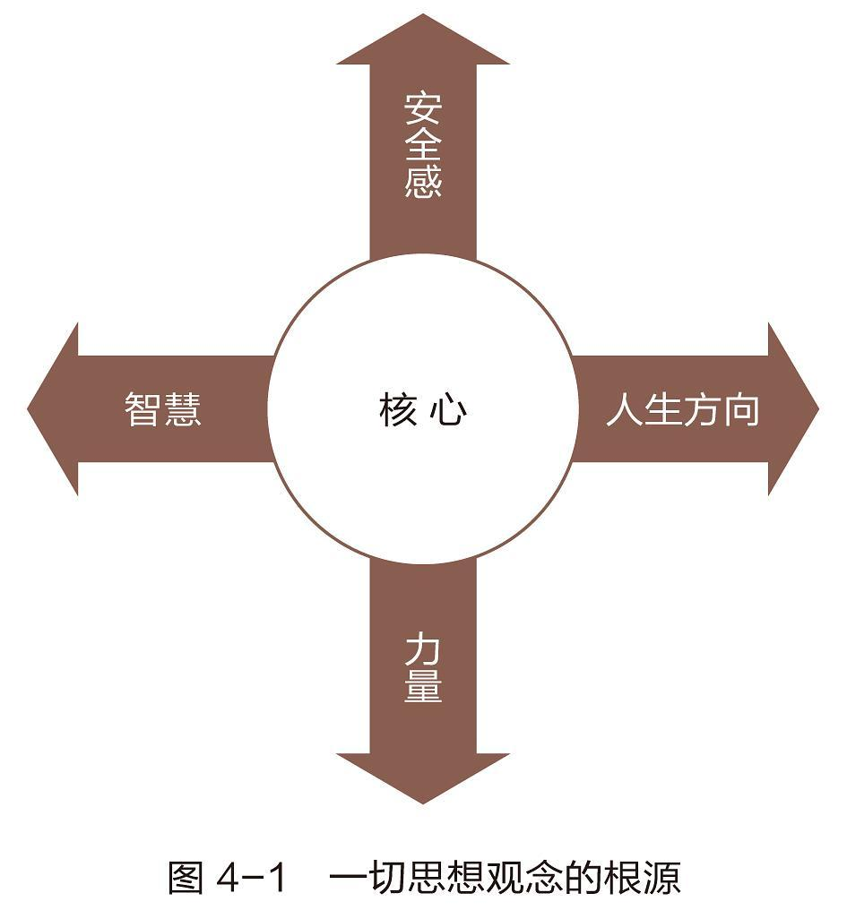
- “安全感”（Security） 代表价值观、认同、情感的归属、自尊自重与拥有个人的基本能力。
- “人生方向”（Guidance） 是“地图”和内心的准绳，人类以此为解释外界事物的理据以及决策与行为的原则和内在标准。
- “智慧”（Wisdom） 是人类对生命的认知、对平衡的感知和对事物间联系的理解，包括判断力、洞察力和理解力，是这些能力的统一体。
- “力量”（Power） 则指采取行动、达成目标的能力，它是做出抉择的关键性力量，也包括培育更有效的习惯以替代顽固旧习的能力。
它们相辅相成——安全感与明确的人生方向可以带来真正的智慧，智慧则能激发力量。若四者全面均衡，且协调发展，便能培养高尚的人格、平和的性格与完美的个体。
一个人的安全感一定介于极度不安全和极度安全之间，前者说明你的生活总是被变化莫测的外力所干扰和左右，后者说明你对于自己的真正价值有着清晰而深刻的认识；
人生方向也有两个极端，一个是以“社会之镜”及其他不确定的变化性因素为基础，一个是以坚实的内在方向为基础；
智慧则一端是完全扭曲事实的错误地图，一端是所有事物和原则都适度关联的正确地图；
就力量来说，最低层次是成为别人手中的提线木偶，事事由人，最高层次就是完全依照自己的价值观行事，不受外人和外界的干扰。
这四者的成熟程度，它们之间平衡、协调和整合的情况，它们对生活各方面的积极影响与否，都取决于你的基本思维方式。
各种生活中心
不论你是否意识得到，人人都有生活中心，它们对生活各方面的强烈影响毋庸置疑。
- 以配偶为中心
- 以家庭为中心
- 以金钱为中心
- 以工作为中心
- 以名利为中心
- 以享乐为中心
- 以敌人或朋友为中心
- 以宗教为中心
- 以自我为中心
识别自己的生活中心
一般说来，我们的生活中心是以上某几种中心的混合体，依环境不同而有所变化。大多数人的生活受到多种因素的影响，可能今天以朋友为中心，明天又变为以配偶为中心。生活中心如此摇摆不定，情绪上难免起起落落，一会儿意气风发，一会儿颓唐沮丧；一会儿斗志昂扬，一会儿又落魄消沉。缺乏固定的人生方向，没有持久的智慧，也没有稳定的力量或自我评价。所以，最理想的状况还是建立清晰明确的生活中心，由此才能产生高度的安全感、人生方向、智慧和力量，使人生更积极，更和谐。
以原则为中心
以正确原则为生活中心可以为发展上述四个支撑人生的因素奠定坚实的基础。
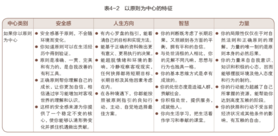
任何原则都有必然后果。遵从原则，后果就是积极的；忽视原则，后果就是消极的。原则具有广泛适用性，无论是否为人所知，这种制约都是普遍存在的。越了解正确的原则，明智行动的自由度就越大。
以永恒不变的原则作为生活中心，就能建立高效能的思维方式，也就能正确审视所有其他的生活中心。
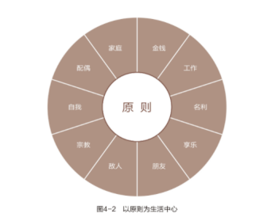
- 首先，这是主动的选择，没有受到环境或他人的影响，是通盘考虑后选择的最佳方案，是有意识的明智选择。
- 其次，这是最有效的选择，因为它基于原则，其长期后果可以预料。
- 再次，这是根据原则所做出的选择，能提高自身的价值。为了报复他人而决定加班或者为了公司利益而加班的结果虽然相同，但意义却大相径庭。践行这个决定的过程有助于从整体上提升你的生活质量和意义。
- 再次，若平时已与配偶和老板建立了良好的相互依赖关系，此时就不难向他们解释如此决定的理由，而且也会得到体谅。因为已经实现了独立，所以可以选择有效的相互依赖，可以授权他人完成部分任务，剩下的等自己第二天一早来完成。
- 最后，对自己的选择胸有成竹，无论结果怎样，都能专注于此，并且心安理得，内心没有羁绊。
- 以原则为生活中心的人总是见解不凡，思想与行为也独具一格，而坚实、稳定的内在核心赐予他们的高度安全感、人生方向、智慧与力量，会让他们度过积极而充实的一生。
撰写使命宣言并付诸实践
随着对自身了解的不断加深，会逐渐让思维与正确原则融为一体，与此同时，一个高效强大的生活中心一并产生。透过这个中心审视世界，思路将会变得更清晰，这样做也会让每一个人关注自己在世上的独特作用。
每个人都有特殊的职责或使命，他人无法越俎代庖。生命只有一次，所以实现人生目标的机会也仅止于一次……追根究底，其实不是你询问生命的意义何在，而是生命正提出质疑，要求你回答存在的意义为何。换言之，人必须对自己的生命负责。
善用整个大脑
自我意识让我们能审视自己的思想，这特别有助于撰写个人使命宣言。撰写过程中需要发挥作用的两项人类天赋——想象力和良知——是右脑的主要职能。知道怎样开发右脑功能能够大大增强设计人生的能力。
研究结果显示，人的大脑可分为左右两部分，左脑主司逻辑思考与语言能力，右脑执掌创造力与直觉。左脑处理文字，右脑擅长图像；左脑重局部与分析，右脑重整体与整合。
开发右脑的两个途径
理解了左右脑的这种分工，就不难明白善于创造的右脑对于第一次创造的成功来说影响巨大。我们越是开发右脑的功能，就越能通过心灵演练和综合能力，跨越时空障碍对人生目标做全盘考量与规划。拓宽思路和心灵演练就是开发右脑的两个途径。
- 拓宽思路
- 有时，人会因为意外打击而在瞬间从左脑思维变成右脑思维，比如亲人离世、罹患重病、经济危机或陷入困境的时候，我们会扪心自问：“到底什么才是真正重要的？我究竟在追求什么？”积极主动者不需要这种刺激就能拓宽思路，自觉转换思维方式。
- 人人都能够运用想象力来挖掘内心深处真正的价值观，虽然技巧各异，但效果相同。只要肯用心探究、探求人生目标，就能以一颗虔诚的心对待生命，把思路拓宽，把目光放远。
- 心灵演练与确认
- 施行自我领导不是只要撰写一个使命宣言就成了，它是一个确立愿景和价值观，并让自己的生活遵从这些重要原则的过程。右脑会在这个过程中帮助你进行心灵演练（Visualization），并对正确行为加以确认（Affirmation）。这会让你的生活更符合使命宣言，也是“以终为始”的另一种应用。
- 确认应该包括五个基本要素：个人、积极、果断、可视、情感。例如， “发现子女行为不当时，我（个人）能以智慧、爱心、坚定的立场与自制力（积极）及时应对（果断），结果让我深感欣慰（情感）。”
- 针对心灵演练所需要的可视化和确认步骤，有一个包括书面材料、有声书、视频在内的完整体系。该领域的最新研究成果有：阈下意识、神经语言、放松和自我谈话疗程。以上内容包括对第一次创造基本原则的解释、运用和分类。
- 心灵演练和确认也是设计人生的手段，但必须注意不要违背自己的生活中心，更不能源于金钱、自我或其他远离正确原则的生活中心。
- 想象力可以帮人达到追名逐利的目的，但却不能长久。我相信脚踏实地的想象力若能与良知共同发挥作用，将有助于超越自我，并实现基于独特目标和原则的高效能生活。
确定角色和目标
- 撰写使命宣言的时候，分管逻辑和语言的左脑就会从语言神经中枢联合右脑描绘图像和感受。正如吐纳练习会连接身体和思想，写作也是神经肌肉练习，能够让意识和潜意识融和。写作会让想法凝练、清晰，还能化整体为部分。
- 人们想提高工作效率时，常会遇到的问题之一是思路不够宽广，他们失去了高效生活必需的、区分轻重缓急的能力、平衡以及自然生态。埋头工作忽略健康，或者事业成功，但是忽略宝贵的人际关系。
- 按照重要的角色写就的使命宣言会维持生活的平衡、和谐，而且会让每个角色清晰地摆在面前。这样你在常常检查宣言时，便会确保你不是只重视一个角色却完全忽略了其他同样重要的角色。
- 一旦确定了主要的人生角色，你就能清楚地掌握全局。接着，还要订立每个角色的长期目标，这些目标必须反映你真正的价值观、独特的才干与使命感。
- 认清方向是以结果为重，而非日常活动。因此你就能辨别目的地，还能明确身处何方。这样为你抵达终点提供信息、时间。你所有的能量和努力汇聚于此，你能从中发现日常活动的意义和目的，因此会变得积极主动。掌控人生，实现每日目标，随之践行使命宣言。
- 角色与目标能赋予人生完整的架构与方向，假若你还缺少这么一份个人使命宣言，现在正是开始撰写的最佳时机。开始习惯三之前，先详述一下短期目标。关于这点首先要看清和宣言有关的角色以及长期目标。运用习惯三“要事第一”进行个人管理时，这些角色和目标是有效实现短期目标的基础。
家庭的使命宣言
- 除了个人以外，家庭也可凭借共同的目标来促进和谐。有不少家庭处理人际关系没有原则，全凭一时兴起及个人好恶，缺乏长久之计。因此，每当压力陡增，家人便乱了方寸，出现冷言相向、冷嘲热讽或沉默抗议等消极反应。在这种环境下长大的孩子，必然以为解决问题的方法只有冲突或逃避。
- 其实，每个家庭都有共同的价值观及理念作为生活的中心，撰写家庭使命宣言正可凸显这个生活中心。家庭使命宣言有如宪法，可当作衡量一切利弊得失的标准，以及重大决定的依据，并使全家人在共同的目标下团结一心。
- 家人共同撰写宣言，从起草到反馈，再加以修改以及采纳家庭成员的建议，这个过程能让一家人聚在一起商量重大事件。如果全家人秉承互相尊重的理念，各抒己见同时携手合作，那么最终成果将大于一己之力，写出来的宣言便是最好的。适时回顾宣言，调整重点和方向，使用与时俱进的语句替代已经过时的，这样有助于让一家人团结在共同的价值观和目标之中。
- 家庭宣言是思考和管理家庭的框架。一旦出现问题和危机，它就会提醒全家人什么最重要，并基于正确的原则提供解决问题的办法和决策。
- 当我和家人制定家庭目标和活动时，我们考虑：基于原则我们该做什么；完成目标实现价值需要什么行动计划。我家墙上便贴有这么一份使命宣言，记载着全家共同定下的原则，包括互助合作、维持整洁、用言语表达感情、培养专长与欣赏家人的才华等等。每年6月与9月，即学年结束与开始之际，我们都会加以修订，使之更符合实际情况。
组织的使命宣言
唯有参与 才有认同
- 许多组织，包括家庭，都有一个最根本的问题，那就是成员并不认同集体目标。我经常看到员工个人目标与企业目标背道而驰的现象，还有很多企业的薪酬制度与其所标榜的理想不相契合。
- 一个真正反映每个成员的共同愿景和价值观的使命宣言，能调动他们的创造力和奉献精神，使他们不再需要旁人的指挥、监督和批评，因为他们已经接受了不变的核心原则，接受了企业为之奋斗的共同目标。
习惯三 要事第一——自我管理的原则
有效管理是把握重点的管理，它把最重要的事放在第一位。由领导决定什么是重点后，再靠自制力来掌握重点，时刻把它们放在第一位，以免被感觉、情绪或冲动所左右。
重要之事决不可受芝麻绿豆小事牵绊。——歌德（Goethe）｜德国诗人
- 习惯三可以让人受益匪浅，是习惯一和习惯二的具体实践。
- 习惯一告诉你：“你是创造者，你掌控自己的人生。”这个习惯的基础是人类特有的四大天赋，即想象力、良知、独立意志以及最为重要的自我意识。这个习惯让你能够大声宣布：“虽然那是我从小见惯了的事情，整个社会也都是这个样子，但是那根本就行不通，我不喜欢这种没有任何实际效果的解决方法，我能够改变它。”
- 习惯二是关于第一次的创造或者智力上的创造的习惯，其原则基础是想象力和良知这两大天赋。想象力是一种超前感知的能力，是对目前无法亲眼看到的潜力和创造力的认识，而良知则是发掘每个人身上独有特性的能力。良知在伦理道德方面担当对个体进行指导的责任。这个习惯同我们的基本思维方式和对自己的最高期望值、价值观密切相关。
- 习惯三是关于第二次的创造或者体力上的创造的习惯，是对前面两个习惯的实现、执行和自然流露。它要求我们运用独立意志努力实现一个目标，即以原则为基础安排人生。
- 要牢记管理与领导迥然不同。从本质上说，领导是一种高效率的右脑型活动，常被人们称为一门艺术，其基础是一种哲学理念。如果你需要解决一些个人领导方面的问题，通常都要先自问一些人生最本质的问题。
- 一旦确定了人生方向，你就应该对自己进行有效的管理，让生活与设想一致。相对于自我领导来说，有效的自我管理所涉及的大都是左脑所擅长的能力：分解、分析、排序，具体运用以及在规定时间内完成任务等。关于提高个人效能的方法，我总结出一句话：左脑进行管理，右脑进行领导。
独立意志：有效管理的先决条件
- 除了自我意识、想象力和良知之外，想要真正实现成功的自我管理，就必须发挥人类的第四大天赋——独立意志。独立意志指的是做出决定和主动选择，并根据这些决定和选择采取具体行动的能力。有了独立意志，我们就可以主动作为，而不是被动听命，而且在发挥其他三大天赋拟定出计划之后，就能够积极实施这些计划。
- 有效的管理指的就是要事第一，先做最重要的事情。领导者首先要决定的，就是哪些事情是重要的；而作为管理者，就是要将这些重要的事务优先安排。从这个意义上说，自我管理的实质就是自律和条理，是对计划的实施。
- 如果你能够成为高效率的自我管理者，那么你的自律就是由内而外形成的，是独立意志的具体表现，你所信奉与追随的就是内在的价值观及在此基础上形成的人生要旨。有了独立意志和诚信人格，你就可以控制自己的感情、冲动以及情绪，服从这些价值观的约束。
- “成功者能为失败者所不能为，纵使并非心甘情愿，但为了理想与目标，仍可以凭毅力克服心理障碍。”
- 克服这种心理首先要有明确的目标和使命，要有习惯二中所明确的人生方向和价值观，内心要有燃烧的激情，让自己对所有其他不相关的事情大声说“不”。克服这种心理还需要有独立意志，愿意为自己所不愿为之事，能够做到在特定时刻始终坚持自己的既定价值观，不屈服于一时的冲动和欲望。这种能力会让你成为一个诚信的人，让你忠实于自己积极的第一次的创造。
四代时间管理理论的演进
- 时间管理理论
- 第一代理论着重利用便条与备忘录，在忙碌中调配时间与精力。
- 第二代理论强调行事历与日程表，反映出时间管理已注意到规划未来的重要。
- 第三代是目前正流行、讲求优先顺序的观念。也就是依据轻重缓急设定短、中、长期目标，再逐日订立实现目标的计划，将有限的时间、精力加以分配，争取最高的效率。
- 第四代理论，它根本否定“时间管理”这个名词，主张关键不在于时间管理，而在于个人管理。与其着重于时间与事务的安排，不如把重心放在维持产出与产能的平衡上。
- 如何分辨轻重缓急与培养组织能力，是时间管理的精髓。
别让琐事牵着鼻子走
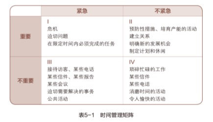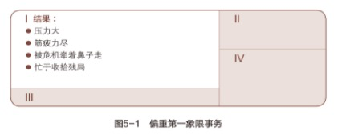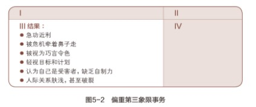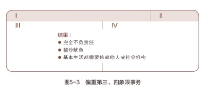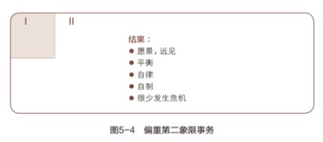
- 重要性与目标有关，凡有价值、有利于实现个人目标的就是要事。一般人往往对燃眉之急立即反应，对当务之急却不尽然，所以更需要自制力与主动精神，急所当急。
- 不论大学生、生产线上的工人、家庭主妇，抑或企业负责人，只要能确定自己的第二象限事务，而且即知即行，一样可以事半功倍。在时间管理领域称之为帕雷托原则（Pareto Principle）——以20％的活动取得80％的成果。
勇于说“不”
你的缺点在于——
-
无法辨别事情重要与否？
-
无力或不愿有条不紊地行事？
-
缺乏坚持以上原则的自制力？
-
如果内心不够坚定，很难拒绝第三、第四象限事务的诱惑，只有当你有意识检查日程，有想法重新确立以原则为中心的事情，才会拥有足够的独立意志真诚地拒绝。
集大成的时间管理理论
第四代理论便在旧有基础上，开创新局面。以原则为重心，配合个人对使命的认知，兼顾重要性与急迫性；强调产出与产能齐头并进，着重第二象限事务的完成。
第四代时间管理方法六标准
- 和谐一致 个人的理想与使命、角色与目标、工作重点与计划、欲望与自制之间，应和谐一致。
- 平衡功能 管理方法应有助于生活平衡发展，提醒我们扮演不同的角色，以免忽略了健康、家庭、个人发展等重要的人生层面。有人以为某方面的成功可补偿其他方面的遗憾，但那终非长久之计。难道成功的事业可以弥补破碎的婚姻、孱弱的身体或性格上的缺失？
- 围绕中心 理想的管理方法会鼓励并协助你，注重于虽不紧急却极重要的事。我认为，最有效的方法是以一星期为周期制订计划。一周7天中，每天各有不同的优先目标，但基本上7天一体，相互呼应。如此安排人生，秘诀在于不要就日程表订立优先顺序，应就事件本身的重要性来安排行事。
- 以人为本 个人管理的重点在人，不在事。行事固然要讲求效率，但以原则为中心的人更重视人际关系的得失。因此有效的个人管理偶尔须牺牲效率，迁就人的因素。毕竟日程表的目的在于协助工作，并不是要让我们为进度落后而产生内疚感。
- 灵活变通 管理方法并非一成不变，视个人作风与需要而调整。
- 便于携带 管理工具必须便于携带，随时可供参考修正。
自我管理四步骤
-
确认角色
- 第一步就是要写出你自己的关键角色。如果你还没有认真思考过这个问题，那么可以把自己想到的先记下来。作为一个个体，你有属于自己的各种角色。你可以先写下自己在家庭中的角色：丈夫或妻子、父亲或母亲、儿子或女儿，大家族中的祖父母、外祖父母、叔舅、姨婶或者表堂兄弟姐妹等等。然后再写下自己在工作中的角色，列举自己想要持续投入时间和精力去做的一些事情，还可以将自己在教会或者社区事务中的角色也写出来。
-
选择目标
- 第二步就是思考下一个周计划中每一任务栏下你最想做的一两件要事，作为你选定的目标。
-
安排进度
- 第三步是为每一项目标安排具体的实施时间。如果你的目标是起草自己的个人使命宣言，那就不妨在星期天安排两个小时专门做这件事情。通常星期天（或根据自己的信仰、生活方式、工作安排选择其他某个适当的时间）是进行个人思考和制订个人成长计划（包括周计划）的理想时间，因为这时候你有充足的时间思考、反省，寻求灵感，并根据各项原则和价值观来审视自己的生活。
-
每日调整
- 使用这种以第二象限事务为中心的周计划之后，你就会发现原来的每日计划变成了每日调整，即根据突发事件、人际关系的意外发展及崭新机会对每天的要务安排进行适当调整。
-
对人不可讲效率，对事才可如此。对人应讲效用，即某一行为是否有效。
-
第四代个人管理理论的特点，在于承认人比事更重要。而芸芸众生中，首要顾及的便是自己。它比第三代理论高明之处在于：强调以原则为中心，以良知为导向，针对个人独有的使命，帮助个人平衡发展生活中的不同角色，并且全盘规划日常生活。
第四代时间管理方法的优点
- 第四代时间管理方法做到了充分尊重这个原则。同时，这种方法还认识到，就效用而不是效率而言，你首先要考虑的人就是你自己。
- 首先，它以原则为基础，切实地创造出一个核心模式，让你能够在一个更大的范围内分配自己的时间，看清楚什么是真正重要的和有效的。
- 其次，它接受你内心良知的指导。这种方法让你有机会更好地安排自己的生活，并且最大限度地同你既定的价值观保持一致。同时，它也给你自由和变通，让你在牺牲既定日程安排，服从更重要的价值观的时候心平气和，不必内疚。
- 再次，这种方法确认了你的个人使命，包括价值观和长期目标。这样你在度过每一天的时候都有明确的目标和方向。
- 再次，这种方法帮助你明确自己的角色，平衡自己生活中的各个方面。每个星期为每个关键角色确立要达到的目标，并做出具体的日程安排。
- 最后，这种方法以一个星期为单位计划生活（需要的时候可以对每天的安排作适当的调整），这让你拥有了更广阔的视野，不必局限于短暂的一天时间。通过审视自己的主要角色而让自己保持清醒，经常想到自己内心深处的价值观。
授权——高效能的秘诀
- 授权是提高效率或效能的秘诀之一，可惜一般人多吝于授权，总觉得不如靠自己更省时省事。
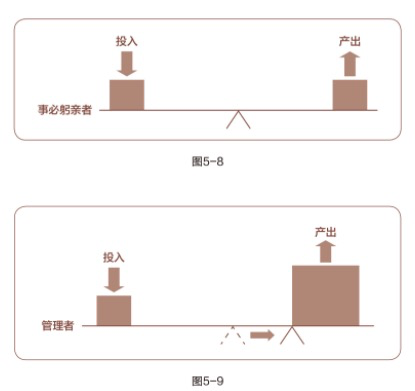
指令型授权
指令型授权是让别人“去做这个，去做那个，做完告诉我”。大部分生产者都具有这种指令型授权的行为模式。
责任型授权
责任型授权的关注重点是最终的结果。它给人们自由，允许自行选择做事的具体方法，并为最终的结果负责。起初，这种授权方式费时又费力，但却十分值得。通过责任型授权，可将杠杆的支点向右移动，提高杠杆的作用。
这种授权类型要求双方就以下五个方面达成清晰、坦诚的共识，并做出承诺：
- 预期成果
- 双方都要明确并理解最终的结果。要以“结果”，而不是以“方法”为中心。要投入时间，耐心、详细地描述最终的结果，明确具体的日程安排。
- 指导方针
- 确认适用的评估标准，避免成为指令型授权，但是一定要有明确的限制性规定。不加约束的放任，其最终结果只能是扼杀人们的能动性，让人们回到初级的指令型要求上：“告诉我你想要我做什么，我照做就是了。”事先告知对方可能出现的难题与障碍，避免无谓的摸索，但不要告诉做什么。要让他们自己为最后的结果负责，明确指导方针，放手让他们去做。
- 可用资源
- 告知可使用的人力、财物、技术和组织资源以取得预期的成果。
- 责任归属
- 制定业绩标准，并用这些标准来评估他们的成果。制订具体的时间表，说明何时提交业绩报告，何时进行评估。
- 明确奖惩
- 明确告知评估后的结果——好的和不好的——包括财物奖励、精神奖励、职务调整以及该项工作对其所在组织使命的影响。
授权的大原则不变，权限却因人而异。对不够成熟的人，目标不必太高，指示要详尽，充分提供资源，监督考核要频繁，奖惩更直接。对成熟的人，可分配挑战性高的任务，精简指示，减少监督考核次数，考评标准则较为抽象。
成功的授权也许是有效管理的最好体现，因为不管是对个人还是对组织，有效授权都是发展成长的最基本因素。
以要事为中心的思维方式
- 有效的自我管理以及通过授权对他人进行有效的管理，其中的关键并不是技巧、工具或其他外在因素。这种有效管理的中心是内在的，是以第二象限事务为中心的思维方式，让你能从重要性而不是紧迫性来观察一切事务。
- 如果能够建立以第二象限事务为中心的思维方式，就能提高安排生活的能力，能够真正做到要事为先，言出必行。从此，就可以有效管理自己的生活，不必再求助于其他任何人或任何事情。
- 有一个很有趣的现象就是，我列出来的高效能人士的七个习惯全都属于第二象限事务的活动，每一个习惯都针对一些最基本、最重要的事情。如果你能够将这些习惯运用于日常实践中的话，我们的生活将会发生翻天覆地的变化。
四、公众领域的成功:从独立到互赖
人际关系的本质
所谓情感账户，储存的是增进人际关系不可或缺的“信赖”，也就是他人与你相处时的一份“安全感”。能够增加情感账户存款的，是礼貌、诚实、仁慈与信用。
没有信任就谈不上友谊，没有诚实也就谈不上信任。——塞缪尔·约翰逊（Samuel Johnson）｜英国辞典编纂家兼作家
- 良好人际关系的基础是自制与自知之明。有人说，爱人之前，必须先爱自己。此言果然不虚，但是我更强调人贵知己。了解自我才懂得分寸，也才能真正爱护自己。
- 独立是互赖的基础。缺乏独立人格，却一味玩弄人际关系的技巧，纵使得逞于一时，也不过是运气罢了。处顺境之中，还可任你为所欲为。但天有不测风云，一旦面临逆境，技巧便不可靠了。
- 维系人与人之间的情谊，最要紧的不在于言语或行为，而在于本性。言不由衷、虚伪造作的表面功夫很快就会被识破，何以建立圆满的互赖关系？
- 由此可见，修身是公众领域成功的基础。完成修身的功夫后，再向前看，面前又是一片崭新的领域。良好的互赖关系可以使人享有深厚丰富的情感交流，不断跃进的成长以及为社会服务奉献的机会。
- 鹅——良好的互赖关系，会生出完美的金蛋——团队合作、开诚布公、积极互动以及高效能。为使鹅能够不断生金蛋，就得悉心呵护，习惯四、 五、 六即着眼于此。下面我们再以“情感账户”（Emotional Bank Account）作比，解析人际关系中产出与产能平衡的原理。
情感账户
- 能够增加情感账户存款的，是礼貌、诚实、仁慈与信用。这使别人对我更加信赖，必要时能发挥相当的作用，甚至犯了错也可用这笔储蓄来弥补。有了信赖，即使拙于言辞，也不致开罪于人，因为对方不会误解你的用意。所以信赖可带来轻松、坦诚且有效的沟通。
- 速战速决是不切实际的，建立和维护关系都需要时间。如果因为他反应冷淡或者不以为然就不耐烦起来，那就是前功尽弃。
- 事实上速战速决的方法根本就不存在，建立并维持人际关系是一种长期的投资行为。
七种主要的投资方式
- 理解他人 理解他人是一切感情的基础。人如其面，各有所好。同一种行为，在甲身上或许能增进感情，换作了乙，效果便可能完全相反。因此只有了解并真心接纳对方，才可以增进彼此的关系。
- 很多人都倾向于主观臆断他人的想法和需要，觉得在自己身上适用的感情投资，一定也适用于他人。一旦发现结果并不如自己所期望的那样，就会觉得自己一片好意成了空，变得心灰意冷起来。
- 想要别人怎样待你，就要怎样待人。字面意思是你对待他人的方式最终会被返还给自己，但我认为其内涵是，如果你希望别人了解你的实际需要，首先要了解他们每一个人的实际需要，然后据此给予帮助和支持。正如一个成功养育了几个孩子的家长所言：“区别对待他们，才是平等的爱。
- 注意小节 一些看似无关紧要的小节，如忽视礼貌，不经意的失言，最能消耗情感账户的存款。在人际关系中，最重要的正是这些小事。
- 人的内心都是极其柔弱和敏感的，不分年龄和资历。哪怕是在最坚强和冷漠的外表下，也往往隐藏着一颗脆弱的心。
- 信守承诺 守信是一大笔储蓄，背信则是庞大支出，代价往往超出其他任何过失。一次严重的失信使人信誉扫地，再难建立起良好的互赖关系。
- 明确期望 目标期望不明确也会损害交流与信任。
- 几乎所有的人际关系障碍都源于对角色和目标的期望不明或者意见不一致。我们需要明确应该由谁来完成什么样的工作。
- 很多期望都是含蓄的，从来没有明白地说出来过，但是人们却想当然地认为这些事是心照不宣的。实际情况并非如此。如果没有明确的期望，人们就会变得感情用事，原本简单的小误会也会变得很复杂，原本很小的事情也会导致严重的冲突和人身攻击，最终不欢而散。
- 正确的做法是一开始就提出明确的期望，让相关的每一个人都了解。要做到这一点需要投入很多的时间和精力，不过事实会向你证明，这样做会省去你将来更多的麻烦和周折。
- 正直诚信 正直诚信能够产生信任，也是其他感情投资的基础。诚信，即诚实守信，既要有一说一，又要信守承诺、履行约定。而体现这种品格的最好方法就是避免背后攻击他人。如果能对不在场的人保持尊重，在场的人也会尊重你。当你维护不在场的人的时候，在场的人也会对你报以信任。
- 在相互依赖的环境中，诚信就是平等对待所有人。这样，人们就会慢慢信任你。纵使起初并非人人都能接受这种作风，因为在人后闲言碎语是人的通病，不同流合污，反而显得格格不入。好在路遥知马力，日久见人心，诚恳坦荡终会赢得信任。
- 诚信还意味着不欺骗，不使诈和不冒犯。“谎言”的定义是“存心欺骗别人的话”。所以，要保持诚信，无论语言还是行动都不能心存欺骗。
- 勇于致歉 这种勇气并非人人具备，只有坚定自持、深具安全感的人能够做到。缺乏自信的人唯恐道歉会显得软弱，让自己受伤害，使别人得寸进尺。因此，还不如把过错归咎于人，反而更容易些。
- “弱者才会残忍，只有强者懂得温柔。”
- 真诚的道歉是一种感情投资，但是一再道歉就显得不真诚，会消耗你的情感账户，最终会通过人际关系的质量反映出来。一般来说，人们可以容忍错误，因为错误通常是无心之过。但动机不良，或企图文过饰非，就不会获得宽恕。
- 无条件的爱 无条件的爱可以给人安全感与自信心，鼓励个人肯定自我，追求成长，由于不附带任何条件，没有任何牵绊，被爱者得以用自己的方式，检验人生种种美好的境界。不过，无条件的付出并不代表软弱。我们依然有原则、有限度、有是非观念，只是无损于爱心。
- 有条件的爱，往往会引起被爱者的反抗心理，为证明自己的独立，不惜为反对而反对。有条件的爱反映出爱人者不成熟的心理，表示其仍受制于对方。
一对一的人际关系
“为一个人完全奉献自己，胜过为拯救全世界而拼命。”
一个人即使在外面很了不起，却也不见得能与妻儿或同事相处融洽。相比为群体服务，建立私人关系需要更多人格修养。
- 一对一的关系是人生最基本的要素，有赖高尚的人格来维系，只有管理众人的技巧是不够的。
问题的反面是契机
- 这次经验也让我学得另一个重要观念，即面对问题的态度。为了逃避问题，避免冲突，我蹉跎了不下数月。事实却证明，问题反而是促进和谐的契机。
- 我认为在互赖关系中，问题就代表机会——增加情感账户存款的机会。
- 在相互依赖的环境里，如果认识到产出/产能平衡是效能的要素，我们就可以把问题看作是提高产能的机会。
相互依赖的习惯
牢记情感账户这个概念，我们就可以开始探讨获得公众领域的成功，即与他人合作顺利所必需的习惯，我们会看到这些习惯怎样让相互依赖变得有效，而其他想法和行为对我们又会有怎样的影响。
此外，我们还将深入了解为什么只有真正独立的人才能够做到有效地相互依赖。时下流行的关注个人魅力而非品德的“双赢谈判技巧”、“反应式倾听”或“创新式解决问题”等技巧对于获得公众领域的成功并无益处。
现在还是一个个地深入探讨有助于获得公众领域成功的习惯吧。
习惯四 双赢思维——人际领导的原则
双赢者把生活看作一个合作的舞台，而不是一个角斗场。一般人看事情多非此即彼，非强即弱，非胜即败。其实世界之大，人人都有足够的立足空间，他人之得不必视为自己之失。
金科玉律已深植我们的脑海，现在则是奉行不渝的时刻。——埃德温·马卡姆（Edwin Markham）｜美国诗人
人际交往的六种模式
双赢不是什么技巧，而是人际交往的哲学，是六个交往模式之一，这六个模式分别是：
- 利人利己（双赢）
- 这种模式会促使人不断地在所有的人际交往中寻求双边利益。双赢就是双方有福同享，皆大欢喜，这种结果会让所有人都愿意接受决定，完成计划。双赢者把生活看作合作的舞台，而不是竞技场。但是大多数人都用非此即彼的方法看问题，非强即弱，不胜则败。实际上这种想法是站不住脚的，它以力量和地位，而非原则为准绳。其实世界之大，人人都有足够的立足空间，他人之得不必就视为自己之失。
- 损人利己（赢/输）
- 损人利己是和双赢相对的另外一种模式，前面提到的百慕大之旅竞争就是这种，意思是“我赢就是你输”。秉持这种信念的人习惯于利用地位、权势、财力、特权或个性来达到目的。
- 大多数人从小就被这种模式浸染。在家里，大人总是喜欢将孩子进行比较，好孩子会得到更多的爱、理解和耐心，这就营造了赢/输模式的氛围。一旦爱被附加条件，孩子们就会认为自我价值只有通过比较和竞争才能实现。
- 舍己为人（输/赢）
- 有些人则正好相反，他们信奉舍己为人模式。
- 这种人没有标准，没有要求，没有期望，也没有将来。他们通常喜欢取悦他人，喜欢满足他人的希望。别人的认同和接受能够给他们力量，他们没有勇气表达自己的感受和信念，总是服从于别人的意志。
- 在谈判时，他们常常不是放弃就是退让，如果成为领导，也对属下极端纵容。输/赢模式意味着做老好人，然而“好人不长命”。
- 赢/输和输/赢模式都存在人格缺陷。短期来看，赢/输模式的人较有效率，因为他们通常在能力和智力方面高人一筹，而输/赢模式自始至终都居于劣势。
- 许多主管、经理和家长都在这两种模式间左右摇摆，当他们无法忍受混乱无序、缺乏目标、纪律松散的状态的时候，就会倾向于赢/输模式，之后随着内疚感日增，又会回到输/赢模式，而新一轮的愤怒与挫败感再次将他们推向赢/输模式。
- 两败俱伤（输/输）
- 两个损人利己的人交往，由于双方都固执己见，以自我为中心，最后一定是两败俱伤，因为他们都不服输，都想报复，扳回局面，但其实谋杀等于自杀，报复是一把双刃剑。
- 独善其身（赢）
- 另一种常见的模式就是独善其身，别人输不输都无所谓，重要的是自己一定要得偿所愿。
- 当竞争和对抗意义不大的时候，独善其身的模式是多数人的处事方法，他们只在意自己的利益无损，别人的就留给他们自己去保护吧。
- 好聚好散（无交易）
哪一种最好
- 最好的选择必须依情况而定，关键是认清形势，不要教条地把某一种模式应用于每一种情况。
- 多数情况都只是相互依赖的大环境的一部分，于是只有双赢模式才是唯一可行的。
不能双赢就好聚好散
- 如果实在无法达成共识，实现双赢，就不如好聚好散（放弃交易）。
- 在相互依赖的环境里，任何非双赢的解决方案都不是最好的，因为它们终将对长远的关系产生这样那样的不利影响，你必须慎重对待这些影响的代价。如果你无法同对方达成双赢的协议，那么最好选择放弃。
双赢思维的五个要领
双赢可使双方互相学习、互相影响及共谋其利。要达到互利的境界必须具备足够的勇气及与人为善的胸襟，尤其与损人利己者相处更得这样。培养这方面的修养，少不了过人的见地、积极主动的精神，并且以安全感、人生方向、智慧与力量作为基础。
双赢的原则是所有人际交往的基础，包括五个独立的方面：
- “双赢品德”是基础，
- 接着建立起“双赢关系”，
- 由此衍生出“双赢协议”，
- 需要“双赢体系（结构）”作为培育环境，
- 通过双赢的“双赢过程”来完成，
- 因为我们不能用赢/输或输/赢的手段达到双赢的目的。
双赢品德
三个基本特征：
- 诚信
- 我们将诚信定义为自己的价值观。习惯一、二、三教育我们养成并保持诚信的品德。如果我们在日常生活中有明确的价值观，能积极主动地以此为核心安排活动，信守承诺，就能够逐渐培养起自我意识和独立意志。
- 如果我们不了解“赢”的真正含义及其与我们内心价值观的一致性，那么就不可能做到“赢”。没有了诚信这一基础，双赢不过是一种无效的表面功夫。
- 成熟
- 敢做敢为 / 善解人意
- 这是敢作敢为与善解人意之间的一种平衡状态。 “成熟就是在表达自己的情感和信念的同时又能体谅他人的想法和感受的能力。”这是赫兰德·萨克森年（Hrand Saxenian）教授多年研究得出的结论。
- 如果你认真研究那些用于招聘、升职以及培训的心理测试，就会发现不管它们的主题是个人意志/同理心平衡，还是自信/尊重他人平衡，亦或是关心人/关心任务平衡，其目的都是考察成熟度；而那些沟通分析和管理方式训练术语或评语也是在衡量一个人在敢作敢为与善解人意之间的平衡能力。
- 这种能力是人际交往、管理和领导能力的精髓，是产出/产能平衡的深度表现。敢作敢为的目的是拿到金蛋，而善解人意可以保障其股东的长远利益，领导的根本任务就是要提高所有股东的生活水平和生活质量。
- 敢作敢为和善解人意是双赢的必备条件，其间的平衡点是成熟的重要标志。如果我足够成熟，我就会乐于聆听，善于沟通并勇于面对。
- 知足
- 即相信资源充足，人人有份。
- 一般人都会担心资源稀缺，认为世界如同一块大饼，并非人人得而食之。假如别人多抢走一块，自己就会吃亏，人生仿佛一场零和游戏。难怪俗语说：“共患难易，共富贵难。”见不得别人好，甚至对至亲好友的成就也会眼红，这都是“匮乏心态”（Scarcity Mentality）作祟。
- 抱持这种心态的人，甚至希望与自己有利害关系的人小灾小难不断，疲于应付，无法安心竞争。他们时时不忘与人比较，认定别人的成功等于自己的失败。纵使表面上虚情假意地赞许，内心却妒恨不已，唯独占有能够使他们肯定自己。他们又希望四周环境都是唯命是从的人，不同的意见则被视为叛逆、异端。
- 相形之下，富足的心态（Abundance Mentality）源自厚实的个人价值观与安全感。由于相信世间有足够的资源，人人得以分享，因此不怕与人共名声、共财势，从而开启无限的可能性，充分发挥创造力，并提供宽广的选择空间。
- 公众领域的成功并非意味着压倒旁人，而是通过成功的有效交往让所有参与者获利，大家一起工作，一起探讨，一起实现单枪匹马无法完成的理想，这种成功要以知足心态为基础。
- 一个诚信、成熟、知足的人在人际交往中很少或者根本不需要用到什么技巧。
- 当你超越环境、态度和行为，将触角探寻到自己的内心，就会发现双赢和所有其他正确原则一样，本就深植在我们的生活中。
双赢关系
- 以双赢品德为基础，我们才能建立和维护双赢关系。双赢的精髓就是信用，即情感账户。没有信用，我们最多只能妥协；缺乏信用，我们就无法开诚布公，彼此学习，互相交流和发挥创造性。
- 但是如果情感账户储蓄充足，信用就不再是问题，已有的投入让我们相知相敬，我们可以全神贯注于问题本身，而不是性格或者立场。
- 因为我们彼此信任，所以才能坦诚相待，不管看法是否一致。不论哪一方阐述什么样的观点，另一方都会洗耳恭听，力求知彼解己（习惯五）后共同寻找第三条道路，这种协作的解决办法让彼此都受益。
- 充足的情感账户储蓄和对双赢模式的共识是产生统合综效（习惯六）的理想途径。这种关系不会让问题虚化或者弱化，也不会让意见上的分歧消失，但能够除去那些分散精力的消极因素，如对性格和立场差异的过分关注，从而为实现双赢创造出有利于理解和解决问题的积极合作氛围。
- 你对双赢的态度越坚持，越真诚，越积极，越投入，你对他人的影响力就越大。这是对人际领导能力的真正考验，它超越了交易式（Transactional）领导的范畴，升华至转换式（Transformational）领导的层面，后者能让个人和关系发生转变。
- 没有双赢品格和双赢关系作为后盾，书面协议就形同虚设。只有真诚的感情投资，才能有助于实现双赢。
双赢协议
- 关系确立之后，就需要有协议来说明双赢的定义和方向，这种协议有时被称为“绩效协议”或“合作协议”，它让纵向交往转为水平交往，从属关系转为合作关系，上级监督转为自我监督。
- 这类协议在相互依赖的交往中应用相当广泛。习惯三中的我协助小儿子清理庭院的故事就是一例。当时我们列举的五个基本要素适用于所有相互依赖的合作关系，如雇主与雇员、个人与个人、团体与团体、企业与供应商。这些要素帮助人们有效地明确并协调彼此的期望。
在双赢协议中，对以下五要素应该有明确的规定：
- 预期结果：确认目标和时限，方法不计。
- 指导方针：确认实现目标的原则、方针和行为限度。
- 可用资源：包括人力、财力、技术或者组织资源。
- 任务考核：建立业绩评估标准和时间。
- 奖惩制度：根据任务考核确定奖惩。
这五个要素赋予双赢协议重要意义，对此的理解和认可使人们在衡量自己业绩的时候有据可依。
双赢的管理培训
如果人们能够认真思索，将双赢定为最终目标，不论在业务还是生活等每个领域都可以大有作为。我自己经常会为某个人或某组织的积极转变成果感叹不已，其实领导者所要做的就是放手，让有责任心、积极处世以及具有自我领导能力的人独立完成任务。
双赢绩效协议
双赢绩效协议的前提是模式转换，注意力要放在结果而不是方法上，但大部分人都重方法轻结果。在谈论习惯三的时候，我说到曾用指令型授权让太太桑德拉为滑水的儿子拍照，就是一例。双赢协议注重的是结果，要释放个人潜力，将协作效应最大化，产出与产能并重。
有四种管理者或家长都可以掌控的奖惩方法：金钱、精神、机会以及责任。其中金钱奖惩包括薪资、股份、补贴的增减；精神奖惩包括认同、赞赏、尊敬、信任或者相反——除非温饱没有保障，不然精神奖励的价值通常超过物质奖励；机会奖惩包括培训、进修等；责任奖惩一般同职务有关，比如升职或者降职。双赢协议对此都有明确规定，当事人一开始就一清二楚，因此这并不是暗箱操作，完全做到了透明化。
- 协议从一开始就明确了双方对彼此的期望。使用汽车，满足交通需要让女儿受益；我和桑德拉则不必再操心汽车的清洁和保养，自己的交通需要也偶被满足。女儿的诚信、善良和判断力，加上我们之间充足的情感账户储蓄，足以让她进行自我管理，我们不需要时刻监督她的一举一动，费神怎么处置她。协议让我们三个人都得到了解放。
- 双赢协议意味着自由，但必须以诚信作为支撑，否则即便已经签订，也只能半途而废。
- 真正的双赢协议是双赢模式、双赢品德和双赢关系的产物，它以相互依赖的人际交往为对象，起着规范和指导的作用。
双赢体系
- 双赢只能存在于体系健全的组织机构中。如果提倡双赢，却奖励赢/输模式，结果注定失败。
- 一般来说，你鼓励什么就会得到什么。如果你想要实现既定的目标，就应该建立配套的奖励体系，但如果这个体系与目标背道而驰，自然无法实现愿望，就像那个提倡合作，却用“百慕大之旅”来激励员工的经理一样。
- 双赢必须有相应体系支撑，包括培训、规划、交流、预算、信息、薪酬等，而且所有体系都要建立在双赢原则的基础上。
- 双赢赋予个人明确的任务，说明预期结果、指导原则和可用资源，个人要对结果负责，并完成自我评估。双赢体系要为双赢协议创造有利环境。
双赢过程
- 赢/输的方法不可能带来双赢的结果。你总不能要求别人：“不管你是不是喜欢，都要以双赢为目标。”问题是怎样找到双赢的解决方案。
我建议不同的人和机构采用以下四个步骤完成双赢过程：
- 首先，从对方的角度看问题。真正理解对方的想法、需要和顾虑，有时甚至比对方理解得更透彻。
- 其次，认清主要问题和顾虑（而非立场）。
- 再次，确定大家都能接受的结果。
- 最后，找到实现这种结果的各种可能路径。
需要指出的是，双赢过程同双赢结果密不可分，只有经由双赢过程才能实现双赢结果，这里的目的与手段是一致的。双赢并非性格魅力的技巧，而是人类交往的一种模式。
双赢来自诚信、成熟和知足的人格，是高度互信的结果；它体现在能有效阐明并管理人们的期望和成就的协议中；在起支持作用的双赢体系里蓬勃生长；经由必要的双赢过程来实现。
习惯五 知彼解己——移情沟通的原则
若要用一句话归纳我在人际关系方面学到的一个最重要的原则，那就是：知彼解己——首先去寻求了解对方，然后再争取让对方了解自己。这一原则是进行有效人际沟通的关键。
心灵世界自有其理，非理智所能企及。——帕斯卡（Pascal）｜法国哲学家、数学家及物理学家
你真的听懂了吗
- 沟通是生活中最重要的技能。人们在清醒时的大多数时间都在交流。但是从小到大，我们接受的教育多偏向读写的训练，说也占其中一部分，可是从来没有人教导我们如何去听。然而听懂别人说话，尤其是从对方的立场去聆听，实在不是件容易事。
- 如果你想养成真正有效的人际沟通习惯，就不能单靠技巧。首先你要有能让他人信任和开怀的人格，在此基础上培养移情聆听（EmpathicListening）的技巧，然后建立情感账户来实现心与心的交流。
移情聆听
事实上，大部分人都是这么自以为是。我们的聆听通常有层次之分。
- 一是充耳不闻，压根就不听别人说话；
- 二是装模作样， “是的！嗯！没错！”；
- 三是选择性接收，只听一部分，通常学龄前儿童的喋喋不休会让我们采取这种方式；
- 四是聚精会神，努力听到每一个字。
- 但是，很少有人会达到第五个层次，即最高层次——移情聆听。
主动型和回应型聆听是一种技巧，本质是以自我为中心，就算行为没有显露出，动机已经不言而喻，会让说话的人有受辱的感觉。回应型聆听技巧的目的不过是要做出回应，操控对方。
移情聆听是指以理解为目的的聆听，要求听者站在说话者的角度理解他们的思维方式和感受。
移情（Empathy）不是同情（Sympathy）。后者是一种认同和判断形式，更适合用来表达感情和做出回应，却容易养成对方的依赖性。移情聆听的本质不是要你赞同对方，而是要在情感和理智上充分而深入地理解对方。
移情聆听不只是理解个别的词句而已。据专家估计，人际沟通仅有10%通过语言来进行， 30%取决于语调与声音，其余60%则得靠肢体语言。所以在移情聆听的过程中，不仅要耳到，还要眼到、心到；用眼睛去观察，用心灵去体会。
除了物质，人类最大的生存需求源自心理，即被人理解、肯定、认可和欣赏。
移情聆听是有风险的。只有当你做好了被对方影响的准备，才能深入到移情聆听的阶段，而这是需要足够的安全感的，因为这时候的你会变得很脆弱。从某种意义上说，这很矛盾，因为在影响对方之前，你必须先被影响，即真正理解对方。
所以说习惯一、二和三是基础，帮你保持核心不变，即以原则为中心，从而平和而有力地应对坚实内心之外的脆弱。
先诊断，后开方
尽管要面对风险和困难，先诊断后开方的确是在生活中被多方证实的正确原则，是所有真正的专业人士的标志，不管对验光师还是内科医生来说都很重要。只有当你相信了医生的诊断，才会相信他的处方。
如果你对诊断本身没什么信心，那么也就不会对据此开的药方有信心。
首先理解别人是在生活领域里广泛适用的正确原则，具有普遍性，但是在人际关系领域的作用是最大的。
四种自传式回应
我们在听别人讲话时总是会联系我们自己的经历，因此自以为是的人往往会有四种“自传式回应”（Autobiographical Response）的倾向：
- 价值判断——对旁人的意见只有接受或不接受。
- 追根究底——依自己的价值观探查别人的隐私。
- 好为人师——以自己的经验提供忠告。
- 自以为是——根据自己的行为与动机衡量别人的行为与动机。
有效的沟通
- 第一阶段是复述语句，这至少能使人专心聆听。
- 第二阶段加入解释，完全用自己的词句表达，但仍用左脑的逻辑思维去理解。
- 第三阶段掺入个人的感觉，右脑发挥作用。此时听者所注意的已不止于言语，也开始体会对方的心情。
- 第四阶段是既加以解释，又带有感情，左右脑并用。
适时扮演知音（理解和感知）
当你学习认真倾听时，你会发现自己对别人的感知有了天壤之别。人们在互相依靠的环境中时，这种差别将带来极大影响。
习惯五就是答案，这也是双赢的第一步。假如（特别是）人们的思路不同，首先要知彼解己。
心情不好的时候，最需要善解人意的好听众，如果你能适时扮演这种角色，将会惊讶对方毫无保留的程度。但前提是，你必须真心诚意为对方着想，不存私心。有时甚至不必形诸言语，仅仅一份心意就足以感动对方。
表达也要讲技巧
首先要了解别人才能获得理解。习惯五的第二部分就是如何获得理解，这也是谋求双赢之道所不可缺少的。
成熟在前文被定义为能掌控勇气和关心之间的平衡。了解别人固然重要，但我们也有义务让自己被人了解，这通常需要相当的勇气。双赢需要熟练地掌握勇气和关心，因此合作的环境下更需要让人了解自己。
当你清晰、具体地表达想法，最为重要的是，在理解别人思路和担忧的前提下表达，那么可信度会大大增加。
表达自己并非自吹自擂，而是根据对他人的了解来诉说自己的意见，有时候甚至会改变初衷。因为在了解别人的过程中，你也会产生新的见解。
习惯五会帮助你提升表达的准确度和连贯性。人们会明白，你对介绍的内容十分有把握，而且把显而易见的事实和感知都考虑在内，想要双方都获益。
一对一沟通
当我们真正做到深入了解彼此的时候，就打开了通向创造性解决方案和第三条道路的大门。我们之间的分歧不再是交流和进步的障碍，而是通往协同效应的阶梯。
习惯六 统合综效——创造性合作的原则
统合综效的基本心态是：如果一位具有相当聪明才智的人跟我意见不同，那么对方的主张必定有我尚未体会的奥妙，值得加以了解。
与人合作最重要的是，重视不同个体的不同心理、情绪与智能，以及个人眼中所见到的不同世界。与所见略同的人沟通，益处不大，要有分歧才有收获。我以圣者的期望自勉：对关键事务——团结，对重大事务——求变，对所有事务——宽大。——美国前总统乔治·布什（George Bush）｜就职演说
统合综效就是整体大于部分之和，也就是说各个部分之间的关系也是整体的一个组成部分，但又不仅仅是一个组成部分，而是最具激发、分配、整合和激励作用的部分。
统合综效的精髓就是判断和尊重差异，取长补短。
敞开胸怀，博采众议
所谓统合综效的沟通，是指敞开胸怀，接纳一切奇怪的想法，同时也贡献自己的见地。乍看之下，这似乎把习惯二“以终为始”弃之不顾，其实正好相反。在沟通之初，谁也没有把握事情会如何变化，最后结果又如何。但安全感与信心使你相信，一切会变得更好，这正是你心中的目标。
因为凡是创新就得有担当，不怕失败，不断尝试，即便最后证明是错误的。不愿冒风险的人，经不起此种煎熬。
课堂上的统合综效
凭借多年积累的教学经验，我深信最理想的教学状况往往濒临混乱的边缘，同时考验着师生统合综效的能力。
回顾过去担任顾问与教学工作的经验，我发现只要鼓起勇气，诚恳地言人所不敢言，总会获得相应的回馈，统合综效的沟通由此开始。在热切的交流中，纵使话不成句，思路不连贯，也不会构成沟通障碍。如此得到的结论，有些固然不了了之，但多半能发挥不容忽视的力量。
商业领域的统合综效
人的创造力一旦得到释放，结果真是难以置信。兴奋取代了沉闷，所有人都敞开心扉，接受别人的意见，探寻新思路和新方案。会议接近尾声的时候，每个人对公司所面临的挑战都有了全新的认识，书面提议被废弃，意见分歧被重视和升华，新的共识开始成形。一旦经历过真正的统合综效，人们就会脱胎换骨，会看到未来有更多这种开阔视野的机会。人们有时候会刻意重复某个统合综效的经历，但却很少成功，然而，这些经历背后的核心目标却是可以重现的。就像流传于远东地区的一句哲言：“我们不应单纯地模仿大师的言行，而应该追求大师所追求的探索与创新精神。”同样，我们不应该单纯地模仿，而应该创造。
沟通三层次
- 互相提防
- 互相尊重
- 统合综效
统合综效意味着1+1等于8或16，甚至1600。源自高信任度的统合综效能带来比原来更好的解决方案，每一个参与者都能认识到这一点，并全心享受这种创造性的事业。
由此产生的文化氛围即使不能持久，至少也可以在当时促成产出/产能的平衡。即使在既不能统合综效也不能干脆放弃的情况下，只要用心尝试和努力，通常也都会达成更有效的妥协。
寻求第三条道路
消极协作减效
缺乏安全感的人认为所有的人和事都应该依照他们的模式。他们总想利用克隆技术，以自己的思想改造别人。他们不知道人际关系最可贵的地方就是能接触到不同的模式。相同不是统一， 一致也不等于团结，统一和团结意味着互补，而不是相同。相同毫无创造性可言，而且沉闷乏味。统合综效的精髓就是尊重差异。
尊重差异
与人合作最重要的是，重视不同个体的不同心理、情绪与智能，以及个人眼中所见到的不同世界。
自以为是的人总以为自己最客观，别人都有所偏颇，其实这才是画地为牢。反之，虚怀若谷的人承认自己有不足之处，而乐于在与人交往中汲取丰富的知识见解，重视不同的意见，因而增广见闻。此所谓“三人行，必有我师焉”。
完全矛盾的两种意见同时成立是否合乎逻辑，问题不在于逻辑，而是心理使然。有些矛盾的确可以并存，前面所提到的有关妇女画像的测验已充分证明，同一景象会引起互相矛盾的诠释，而且都言之成理。
与所见略同的人沟通，益处不大，要有分歧才有收获。
化阻力为动力
动力通常是积极、合理、自觉、符合经济效益的力量；相反地，阻力多半消极、负面、不合逻辑、情绪化、不自觉，具社会性与心理性因素。这两组作用力都是真实存在的，在应变时都要考虑周全。
自然界是统合综效的最佳典范
虽然你无法在相互依赖的交往中和统合综效的过程中控制他人的行为模式，但还是有很多事情都在你的影响圈范围内。你自身的统合综效就完全处于你的影响圈内。你应该尊重自己善于分析的一面和富有创造力的一面，尊重它们的差异会催生你的创造力。
即使处于不利境地，也不应该放弃追求统合综效。不要在意别人的无礼行径，避开那些消极力量，发现并利用别人的优势，提高自己的认识，扩展自己的视野。你应该在相互依赖的环境中勇敢而坦率地表达自己的观点、情感和经历，借此鼓励他人同样地坦诚相待。
尊重人与人之间的差异，当有人不同意你的观点的时候，你应该说：“你跟我有不一样的看法，这很好。”你不一定要对他们表示赞同，但是可以表示肯定，并尽量给予理解。如果你只能看到两种解决问题的途径或道路——你的和“错误”的，那么你可以试着寻找统合综效的第三条道路，一般情况下它总是存在的。如果你坚持双赢模式，确实愿意努力理解对方，你就能找到一种让每一个人都受益更多的解决方案。
**每件激怒我们的事情都能成为让我们理解自己的契机。让我们最烦恼的人也往往是我们最好的老师！凝聚团队是进步，共同合作是成功。
五、自我提升和完善
习惯七 不断更新——平衡的自我提升原则
人生最值得的投资就是磨炼自己，因为生活与服务人群都得靠自己，这是最珍贵的工具。
工作本身并不能带来经济上的安全感，具备良好的思考、学习、创造与适应能力，才能立于不败之地。拥有财富，并不代表经济独立，拥有创造财富的能力才真正可靠。微不足道的小事也会引发惊人的结果，每念及此，我就认为世上无小事。——布鲁斯·巴登（Bruce Barton）｜美国前众议员及广告业者
自我提升和完善的四个层面
习惯七就是个人产能。它保护并优化你所拥有的最重要的资产——你自己。它从四个层面更新你的天性，那就是：身体、精神、智力、社会/情感。
从根本上讲，“不断更新”意味着要兼顾这四种要素，要以睿智而均衡的方式，经常并持续运用我们天性中的这四个层面。
对自己投资，对我们用来处世和做贡献的唯一工具进行投资是我们在一生中做出的最有效的投资。我们取得成绩的工具就是我们自己。为了提高效能，我们必须认识到定期从四个层面“磨刀”的重要性。
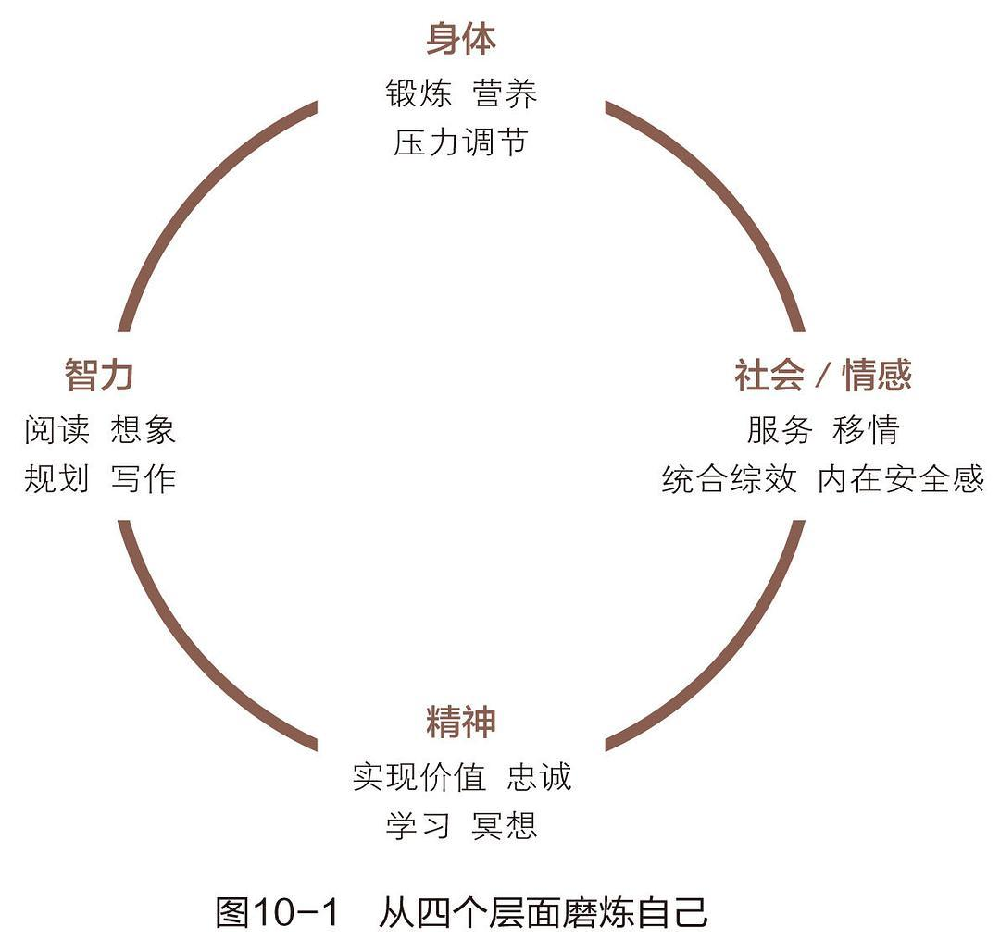
人生的四个层面休戚相关：身体健康有助于心智发展，精神提升有益于人际关系的完满。因此，平衡才能产生最佳的整体效果。
越是积极主动（习惯一），就越能在生活中有效地实施自我领导（习惯二）和管理（习惯三）；越是有效管理自己的生活（习惯三），就能从事越多的第二象限事务的更新活动（习惯七）；越能先理解别人（习惯五），就越能找到统合综效的双赢解决方案（习惯四和习惯六）；越是在培养独立性的习惯方面加以改进（习惯一、二、三），就越能在相互依赖的环境下提高效能（习惯四、五、六）；而自我更新则是强化所有这些习惯的过程（习惯七）。
如果您喜欢此博客或觉得它对您有用，则欢迎对此发表评论。 也欢迎您分享此博客，以便更多人可以参与。 如果博客中使用的图像侵犯了您的版权，请与我联系以将其删除。 谢谢 ！